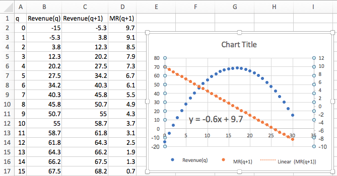
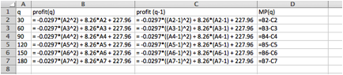

Section 3.1 Marginal Functions and Difference Quotients
¶Link to worksheets used in this section
There are a number of industries where it is common for people to pay significantly different prices for the same product from the same vender. (Airline tickets, symphony seats, and doughnuts at different times of the day come to mind.) The reason is generally not favoritism or an irrational vender, but an analysis that looks at the change in costs and profits for making an additional sale. Flying a plane with 51 passengers does not cost much more than flying the same plane with 50 passengers. The same is true when playing a symphony. Selling an extra doughnut at half price, just before closing when you would have to throw the doughnut out adds to the profit. In all of these cases, we are less concerned with total revenues and profits and more concerned with how things change with one more sale.
In finance and economics this issue is dealt with using marginal functions.
Definition 3.1.1. Marginal value.
If \(f(x)\) is a function (i.e., cost, revenue, or profit), we define the marginal value of \(f(x)\) to be the change in \(f(x)\) as \(x\) increases by 1. Thus
It is worthwhile to point out a detail that may cause a bit of confusion. Note that we are defining marginal functions of x+1 rather than the marginal functions of x. This is the standard convention in finance where the question is phrased in terms of change associated with producing one more. I am more concerned about deciding about what I should do rather than looking at what I have already done. The usual functions with related marginal functions are Cost, Revenue, and Profit.
-
Marginal Cost at x, or Marginal Cost(x+1) is the change from Cost(x) to Cost(x+1) :
\begin{equation*} Marginal\ Cost(x+1)=Cost(x+1)-Cost(x) \end{equation*} -
Marginal Revenue(x+1) is the change from Revenue(x) to Revenue(x+1)
\begin{equation*} Marginal\ Revenue(x+1)=Revenue(x+1)-Revenue(x) \end{equation*} -
Marginal Profit(x+1) is the change from Profit(x) to Profit(x+1).
\begin{equation*} Marginal\ Profit(x+1)=Profit(x+1)-Profit(x) \end{equation*}
It is noteworthy that the three examples mentioned are all cases where the cost of producing the goods has already been set, the goods cannot be saved and sold later, and any change in revenue adds to the profit.
Example 3.1.2. Marginal functions for widgets.
For my widget company I have determined that the cost and demand price functions are:
I want to compute the marginal cost, revenue, and profit to produce the 11th and 26th widget. I also want to understand the marginal cost of producing the 1st widget.
To set up the problem I recall that we assume we are selling at the demand price, the highest price consumers will pay and still have us sell all we produce. Thus the formulas for revenue and profit are:
I set up my worksheet to compute these values.

I then create additional columns for the marginal functions.

Now we simply go back to values and see the values.

\(\ \)
The last equation illustrates the use of marginal functions. While producing and selling the 26th widget did increase total revenue, the marginal profit was negative, so I would have been better off if I had made fewer widgets. Notice that the marginal value of producing the 1st widget is not on the spreadsheet and needs to be dealt with as a special case. Given our functions we have two reasonable ways to understand the value \(Cost(0)\text{.}\) Either we can assume that there is no cost to not being in a business, so \(Cost(0)=0\text{,}\) and our cost function was only valid for positive numbers, or that the \(Cost(0)\) is understood an the fixed costs, which we have already undertaken, like a tax or license fee, so \(Cost(0)=40\) for this problem. Both are reasonable interpretations. We will need to look at the context of our problem to decide on the correct interpretation.
Many questions in business can be translated into making some function as big or small as possible, depending on whether we think the value is good or bad. It is thus often useful to see a graph of both the function of interest and the related marginal function on the same graph.
Example 3.1.3. Profit and Marginal Profit Together.
The function \(Profit(q)=-q^2/20+100q-1000 \) expresses the profit at my gadget factory. Plot both profit and marginal profit together to estimate both the maximum profit at the factory as well as the quantity I should produce to get that profit.
In setting up the spreadsheet, there are some details to notice.
Since Excel does negation before powers, I need parentheses so \(–(q^2)\) is evaluated correctly. Since I suspect I will have to look at a large range of numbers to find the maximum, I put Profit(q) and Profit(q+1) as separate columns. This keeps my marginal operation in a single row and allows computation of Marginal Profit without evaluating for every value of q. We now look at the graph with both Profit and Marginal Profit. To make the graph easier to read, a secondary axis is used for profit. This allows us to see where Marginal Profit crosses the axis.

We see that profit reaches a maximum where marginal profit is zero. This occurs approximately when q is approximately 1000. In that case the profit is about $50,000. Looking back at the numbers in the spreadsheet, we see that the maximum profit is closer to $49,000.
The more realistic situation for us to face is one where we are given a collection of data points. In that situation we need to first find a best fitting curve and use it to make predicted values. Then we can find the marginal function of interest and do our comparison.
Example 3.1.4. Marginal Profit from Data.
I have the following data on profit and production level for widgets.
| Widgets produced | 40 | 50 | 78 | 87 | 95 |
| Profit | $7,486.40 | $14,505.60 | $23,431.60 | $23,014.30 | $21,258.50 |
Use Marginal Profit to find the level of production that maximizes profit.
I put the data into a spreadsheet and find a best fitting curve to produce a formula. Looking at the data, I will assume that profit is a quadratic function of the amount produced.

With the formula from the trendline I can add a column for Predicted Profit(x). The obvious adjustment produces Predicted Profit(x+1). It is then easy to compute the value of Marginal Profit(x+1).

Looking at the graph, the maximum is close to \(x=80\text{.}\) I simply add some rows with appropriate values of x to get the desired answer.

When \(x = 80\text{,}\) the Marginal Profit turns negative. The maximum profit is $23,492.96, obtained by producing 80 widgets.
Difference Quotients and Average Rate of Change
The marginal value, \(Mf(x+1)\text{,}\) of a function \(f(x)\text{,}\) measures the amount of change from \(f(x)\) to \(f(x+1)\text{.}\) It can also be understood as a special case the average rate of change of \(f(x)\text{.}\)
It is easy to see that the average rate of change of \(f(x)\) as \(x\) goes from a to b is
There are a number of situations where we want to look at average rate of change for a period of some other change in the variable. We may have production in thousands or millions of units. If we are looking at monthly or quarterly financial records, we may want to look at the average rate of change over a year to take into account the seasonal variation of production.
Example 3.1.5. Rate of Change when denominator is not 1.
Example 4: We have the following monthly sales data on gizmos.

We want to find the rate of change of monthly sales. If we look at a graph of the sales data

I can see that sales are trending upwards, but there is a seasonal variation added in. Excel will not do a good job of modeling this function with a trendline. Thus, I want to find a rate of change over a period of 12 months to eliminate the seasonal variation. To find the most recent trend I use the most recent data with a time period of 12 months.
It is worth noting that the need to adjust for the right time period for comparisons is probably the reason that company revenue reports typically show the previous quarter as well as the quarter from a year earlier.
An Excel Trick for Difference Quotients
When creating marginal functions or other difference quotients, we often want the computations kept in one row, particularly if we want to graph the function and the marginal function together. A careful arrangement of the columns and the use of quick fill will make our life easier.
Suppose my revenue function is \(rev(q)=-0.2q^2+20q-5\) and I want to compute marginal revenue. Then \(rev(q+1)=-0.2(q+1)^2+20(q+1)-5\text{.}\) Experience shows that students will often make a typing mistake in the second formula, often forgetting parentheses somewhere of forgetting to change one of the copies of \(q\) to \(q+1\text{.}\)

One solution is to add an extra column for \(q+1\) next to the column for \(q\text{.}\) Then the formula for \(rev(q+1)\) is obtained by quick filling form the formula for \(rev(q)\text{.}\)

This trick will be even more useful in the next section when we want to compute the values of \(rev(q)\text{,}\) \(rev(q+0.00)\text{,}\) and \(rev(q-0.001)\text{.}\)
Exercises Exercises: Marginal Functions and Difference Quotients Problems
¶1.
If \(revenue(q)=5q\text{,}\) what is the marginal revenue from selling the 10th item?
The marginal revenue would be given by
The marginal revenue from selling the 10th item is $5.
2.
If \(profit(q)=-100+5q-0.01q^2\text{,}\) what is the marginal profit from selling the 20th item?
3.
If \(cost(q)=100+7q\text{,}\) what is the marginal cost from selling the 30th item?
The marginal cost would be given by
The marginal cost from selling the 30th item is $7.
4.
If \(revenue(q)=-500+7q-0.01\sqrt{q^3}\text{,}\) what is the marginal revenue from selling the 100th item?
5.
If \(cost(q)\) is a constant function what can you say about the marginal cost function? (Use algebra to find a formula for the marginal function.)
Hint: \(marginal\ cost(q+1)=cost(q+1)-cost(q)\)
But the cost function is equal to some constant, so \(cost(q+1)=cost(q)\)
This implies that the Marginal Cost function must be 0.
6.
If \(revenue(q)\) is a linear function with slope \(m\text{,}\) what can you say about the marginal revenue function? (Use algebra to find a formula for the marginal function.)
For problems 7-12:
Make a chart of the function and the marginal function as q goes from 0 to 30.
Plot the function and the marginal function on the same graph.
From the shape of the graph of the marginal function, decide what kind of graph it appears to be.
Find the formula for a best fitting curve for the marginal function.
List the regions where the original function is increasing and the regions where it is decreasing.
List the regions where the marginal function is positive and where the marginal function is negative.
7.
Let \(cost(q)=5000+23 q\text{.}\)
-
Recall that \(Marginal\ Cost(q+1)=Cost(q+1)-Cost(q)\)
The entries in the cells should be

(See part b for some of the values)
-
Partial table and the graphs:

The table and the graph indicate that the marginal function is a constant (23 to be precise)
- \begin{equation*} MCost (q)= 23 \end{equation*}
The cost function is always increasing.
The marginal function is always positive.
8.
Let \(revenue(q)=16 q\text{.}\)
9.
Let \(revenue(q)=-0.3q^2+10q-15\text{.}\)
-
Recall that \(Marginal\ Revenue(q+1)=Revenue(q+1)-Revenue(q)\)
The entries in the cells should be

(See part b for some of the values)
-
Partial table and the graphs:
 The table and the graph indicate that the marginal function is a line.
- \begin{equation*} MRevenue (q+1)= -0.6q+9.7 \end{equation*}
The Revenue function is increasing until \(q\) is about 17.
The marginal function is positive until \(q\) is about 17.
10.
Let \(profit(q)=-2q^2+100q-500\text{.}\)
11.
Let \(cost(q)=q^3-4.5q^2+60q+100\text{.}\)
-
Recall that \(Marginal\ Cost(q+1)=Cost(q+1)-Cost(q)\)
The entries in the cells should be

(See part b for some of the values)
-
Partial table and the graphs:

The table and the graph indicate that the marginal function is a quadratic function.
- \begin{equation*} MCost (q)= 3q^2-6q+56.5 \end{equation*}
The Cost function is always increasing.
The marginal function is always positive.
12.
Let \(value(q)=100(0.9)^q\text{.}\)
For problems 13-16 you are given data for a function.
Assuming the function is of the kind specified; find a best fitting curve for the function and a formula.
Plot the function and the marginal function on the same graph.
From the shape of the graph of the marginal function, decide what kind of graph it appears to be.
In a textbox, describe your conclusions about the sign of the marginal function and the rising or falling of the original function.
13.
Assume profit(q) is a polynomial function of degree 2 and that you have the following data:
| Quantiy | 30 | 48 | 73 | 149 | 177 |
| Profit | 447 | 561 | 669 | 801 | 759 |
The best fitting curve is: \(y = -0.0297x2 + 8.26x + 227.96\)
-
If \(Marginal\ Profit(x+1)=Profit(x+1)-Profit(x)\text{,}\) then can set this up in Excel by finding: \(q, Profit (q), Profit(q-1)\) and \(Marginal\ Profit (q)\)
The chart was created and the marginal profit was plotted using the secondary axis.

The Marginal Profit function seems to be a straight line with negative slope.
In a textbox, describe your conclusions about the sign of the marginal function and the rising or falling of the original function.
14.
Assume profit(q) is a polynomial function of degree 2 and that you have the following data:
| Quantiy | 105 | 203 | 349 | 535 | 644 |
| Profit | 339 | 1535 | 2429 | 2035 | 1029 |
15.
Assume ResaleValue(q) is an exponential function and that you have the following data:
| Year | 2 | 4 | 6 | 8 | 10 |
| Resale Value | $8,607 | $7,593 | $6,423 | $5,684 | $5,051 |
-
 \begin{equation*} Resale\ Value(x)=9836e^{-0.068x} \end{equation*}
\begin{equation*} Resale\ Value(x)=9836e^{-0.068x} \end{equation*} -
Using the following Excel commands


Marginal Resale Value seems to be an exponential function
It appears that Marginal Resale Value is always negative and Resale value is always decreasing.
16.
Assume retirementBalance(q) is an exponential function and that you have the following data:
| Year | 10 | 20 | 30 | 35 | 40 |
| Amount | $54,713 | $143,909 | $289,476 | $395,709 | $533,071 |
17.
The monthly revenue, in thousands of dollars for your company is found to follow:
Plot the revenue and marginal revenue. Explain why marginal revenue is not a good indicator of growth. Plot average rate of change over a 12-month span and explain why it is a better measure of growth.

Marginal Revenue is the change in revenue each month. This gives us some idea of what is happening each month, but does not give a very clear picture of overall trends.
The average rate of change over a 12-month time span would be
The overall growth over an entire year gives a better indication of trends. And the comparison over a year indicates a slight growth on average by $5/month.
18.
Historical data for quarterly revenue reports for Microsoft can be found online. (A good source is http://www.microsoft.com/investor/EarningsAndFinancials/TrendedHistory/default.asp.) Plot 5 years of data.
Explain why looking at marginal change of revenue from one quarter to the next is misleading.
Explain how to adjust for this problem.